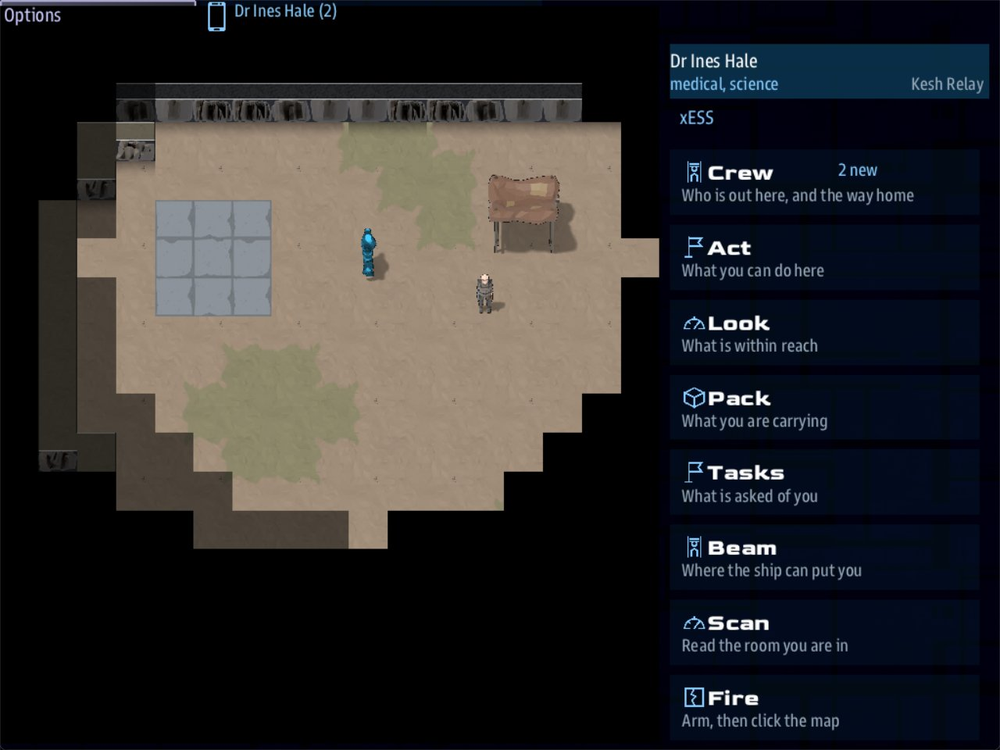

Class 3, Lecture 7 - Anatomy of a long away mission¶
What you will have at the end¶
A second mission for this class, played once and read from end to end.
Lectures 2 to 6 built a scene of rooms: text, and buttons. From here on the party walks. The crew beams down onto a map, crosses a yard, talks to a caretaker, gets past a sentry, opens a door, and lights a beacon or burns it out.
You type nothing of your own today. One command makes the mission. You play it, and then you read its four files until you can say what each one is for.

Science on the ground at Kesh Relay: Dr Ines Hale has walked off the landing pad toward Old Marrow and his tent, and the handheld beside the map lists its apps.The video¶
About 7 minutes. Subtitles are available in the player.
Before you start¶
- You have finished Lecture 6. You can write rooms, conditions, outcomes, a roster with skills and a side story.
- The internet, for Stop 1. One command downloads the mission and its art.
- A command prompt open in
C:\Cosmos\data\missions. - The game closed.
Words for this lecture:
| Word | Meaning |
|---|---|
| Away mission | A visit where the party walks on a map, not through rooms of text |
| Area | One map: a yard, a street, a deck. An away mission can have several |
| Tile | One square of a map. Also called a cell |
| Prop | A thing on the map: a door, a terminal, a key lying in the dust |
| Mark | A named spot on a map. A prop or a person stands on one |
| Art pack | A download of pictures the map is drawn with. Missions share them |
Stop 1 - A second mission for this class¶
MyBoarding stays as it is: a finished scene of rooms. The map gets a mission of its
own.
Make it the way you made the others. Type this as one line:
-t away picks a different template from the one you know. Press Enter at the question.
It ends:
Then bring its libraries up to date, once:
Open the MyAway folder in VS Code and trust it, as in Class 1, Lecture 3. Then check
what you were given:
The art comes separately¶
This mission has no pictures of its own. Its map is drawn with two art packs that many
missions share, named frontier and station. They are listed in the mission's
story.json, at the end:
"shared_media": [
"artemis-sbs.LegendaryMissions.media.v1.4.0.zip",
"artemis-sbs.Cosmos-Tiles.frontier.v0.4.2.zip",
"artemis-sbs.Cosmos-Tiles.station.v0.4.2.zip"
]
sbs create downloads everything on that list into C:\Cosmos\data\missions\__lib__
and unpacks the art (media unpacked:), and sbs fetch "MyAway" --update-libs downloads
it again (media up to date:). You did both, so there is nothing more to do.
Without the two packs the mission still runs, and the map is black. The game says so
once, in its debug.log file. Tried for this page with the two
lines taken out of story.json, the line read:
boarding_ground: the tile art 'frontier', 'station' is not installed, so what it draws is missing - with no art at all the map on the crew console is BLACK, and nothing on it is drawn. It comes from the media packs pinned under `shared_media` in story.json (and named by the TILE_ART setting): fetch them with `sbs fetch <this mission> --update-libs`. The mission still runs - walking, scenes and quests do not need the art.
Everything else worked as before: the party beamed down and walked. If you ever see a black map, "If something goes wrong" has the fix.
Both commands were run for this page on 2026-10-15, with the released tool: the mission
they made was this lecture's example folder, file for file.
Two things to leave alone. Do not change the numbers in those three lines: the art packs
have their own version numbers, and 0.4.2 is right. And never add --retarget to
sbs create for this template. It would rewrite those numbers to the game's, and the
download would fail.
Stop 2 - Play it¶
Start the game with a server and two consoles:
The ship starts beside the relay station, so nobody has to fly anywhere.
- On each console, press the handheld icon at the top. One of its tiles is Boarding Party, and it offers Kesh Relay. Press it, then press BEAM DOWN.
- The console is now the party's handheld, with a map beside it. You are standing on a landing pad at the west end of a yard. The Science console is Dr Ines Hale. The Weapons console is Lt Sam Reyes. Only the ground the party has seen is drawn: at first that is the pad and a little round it, and the rest of the yard is black. Walk, and it fills in.
- Click the map to walk. Click a thing, or a person, to walk up to it and use it.
- As Dr Hale, click the man sitting by the tent. A scene opens on the handheld, with buttons, exactly like a room. Ask him things. One of his answers, Look at that cough, belongs to a medic. Take it: it finishes her side story.
- He tells you about a medical kit under some netting. It was not on the map before he said so. It is now. Click it to pick it up.
- East of the tent a sentry walks a square. It attacks anyone it notices. As Lt Reyes, open Fire on the handheld, choose a setting, press Arm, and click the sentry. STUN holds it for ten seconds. FULL puts it down for good, and it drops a power cell. Expect to miss. A shot goes to the cell you click, and the sentry steps a cell at a time, so a shot often lands where it just was. Nothing tells you a shot missed, or that one hit: the Fire app goes back to SAFE either way. Watch the sentry. It took three shots on the real screen, from about four cells away, each one the moment it stepped into a cell.
- Pick up the power cell, and the keycard lying where the sentry walked.
- Click the door of the relay house. Somebody in the party has the keycard, so it opens.
- Inside is the beacon. Click it. Fit the power cell is offered to whoever carries the cell. Take it, then Call it in.
The game ends, and the last screen reads: The beacon is lit. Every convoy on the Kesh
run has its way home again.
That route was walked by a script for this page, with a stand-in for each of three consoles: six presses, one stun, one shot, three pickups and one door. Then it was played in the game itself, on real consoles, for the pictures in the video. The handheld has an app named Look that lists everything in reach as buttons. If a click on the map does not do what a step says, use Look.
Play it a second time and lose. This time get in without the keycard. As Dr Hale, click
the terminal beside the door. Pull the door code out of its memory is offered to
someone good enough at science, and she is. Copy the code down, then Send the door
code: across the yard the door opens. At the beacon, take Pull the governor and run
it wide open, then Step back from the smoke. The last screen reads: The beacon is
slag. The Kesh run stays dark, and the convoys must find another road.
The handheld has more apps on the ground than it had aboard the hulk:
| App | What it is for |
|---|---|
| Crew | Who is down here, and the way home |
| Act | The scene that is open, and its buttons |
| Look | What is within reach, as a list |
| Pack | What you are carrying |
| Tasks | Your own side story |
| Beam | Other places the ship can put you |
| Scan | What the scanner says about what you can see |
| Fire | Arm the weapon, then click the map |
Lecture 13 is about that screen. For now, know the eight names.
Stop 3 - Four files¶
Close the game and look at the folder in VS Code. Nine files came with the mission. Four of them are the mission. You will never open the other five.
| File | Lines | What it is |
|---|---|---|
ground\landing.tiles |
44 | The map. One area, drawn in text |
ground\starter.tileset |
17 | The kinds of ground there are, and which can be walked on |
mission.amd |
338 | Everything else: the crew, the quests, and what stands on the map |
story.mast |
88 | One line that loads the ground, and one card |
ground is a folder inside the mission. Click the small arrow beside its name to open
it.
There is no Python in this mission and you will write none. Everything you played is in those four files.
Stop 4 - What a map is¶
You have seen this yard already: it is the map beside the handheld, the moment you beam
down. Click landing.tiles. It opens as a picture of the yard, in a part of the add-on called
the Tile Map Editor. Lecture 8 is about that editor. Today, press Text on its toolbar
and read the file as it is written.
It has three parts. First the header, four lines that say what this area is:
| Line | Means |
|---|---|
area: landing |
The area's key. Records in mission.amd name it |
title: Kesh Relay |
What the crew is shown |
tileset: starter |
Which file says what the kinds of ground are: starter.tileset |
entry: pad |
Where somebody who beams down stands: the mark named pad |
Then the legend. Each line is one character, a colon, and a kind of ground:
legend:
.: dust
,: scrub
#: rock
^: cliff
=: pad
_: floor
W: wall
P: pad @pad
D: floor @door
B: floor @beacon
T: dust @terminal
k: dust @caretaker
t: dust @tent
s: dust @post
c: dust @yard
h: scrub @scrub
The last nine lines have something extra: @ and a name. That is a mark. Every cell
drawn with D is floor, and it is also the place named door.
Then a line of three dashes, and the map itself:
---
^^^^^^^^^^^^^^^^^^^^^^^^^^^^^^^^
^###.....,,.......WWWWWWWWW.##^^
^##.......,,......W_______W..#^^
^#..===....,.t....W___B___W...^^
^#..=P=...........W_______W...^^
^#..===.....k.....WWWWDWWWW...^^
^#...................T........^^
^#....,,......................#^
^#...,h,,.....................#^
^##...,,............s.........#^
^^#.....................c....##^
^^##.........,,.............##^^
^^^###......,,,,........#####^^^
^^^^^^^^^^^^^^^^^^^^^^^^^^^^^^^^
Find the things you walked past. The P in the middle of the = signs is the landing
pad. k is where the caretaker sits, and t is his tent. The box of W is the relay
house, with B for the beacon inside it and D for the door in its south wall. s is
where the sentry starts, and c is the keycard.
Cells are counted from the top left corner, starting at 0. The first number goes across and the second goes down. The pad is at 5, 4. The door is at 22, 5. The map is 32 cells wide and 14 tall.
Now starter.tileset. Press Text there too:
kinds:
dust: walk see look=dirt
scrub: walk see look=dirt_grass
pad: walk see look=stone_tiles
floor: walk see look=floor_metal
rock: look=rock
cliff: see look=cliff
wall: tall look=wall_metal
Each line is a kind, and then the rules it has. walk means it can be walked on. see
means it can be seen across. Rock has neither. A cliff can be seen across and not walked,
so the party can see the far side and has to find the way round. look= names the
picture an art pack draws it with.
So the map says where the walls are, and nothing about what happens there. No door, no caretaker and no sentry is in these two files. Only the places they stand.
Stop 5 - What a record is¶
Open mission.amd. It is one file with seven sections, and you know the shape of every
record in it: a heading, a fence, and words underneath.
| Section | Records | What they are |
|---|---|---|
## [The Watch](crew) |
5 | The roster. You wrote one like it in Lecture 4 |
## [Quests](quests) |
2 | Quests for the whole ship |
## [Side Stories](side_stories) |
2 | A quest for one person. Lecture 5 |
## [Props](props) |
6 | Things on the map |
## [People](people) |
1 | Someone you can talk to |
## [Hostiles](hostiles) |
1 | Someone who attacks |
## [Scenes](scenes) |
14 | Rooms, as in Lectures 2 to 6 |
Three of those sections are new. Here is one record from each. The first two are things you clicked in Stop 2: the keycard in the yard, and Old Marrow by his tent.
A prop:
### [Relay keycard](keycard)
---
Area: landing
Mark: yard
Sprite: prop:keycard
Item: relay_key
---
A gray keycard on a lanyard, dropped where the sentry walks.
| Field | Means |
|---|---|
Area: landing |
Which map it is on: the area: line of a .tiles file |
Mark: yard |
Where on that map: a mark from that file's legend |
Sprite: prop:keycard |
Which picture it is drawn with |
Item: relay_key |
Using it puts a relay_key in your pack |
A person:
### [Old Marrow](marrow)
---
Area: landing
Mark: caretaker
Sprite: fig:junker_m
Face: male
Calm: yes
Talk scene: marrow
Scan: One human. Elevated pulse, and a wet cough.
---
The relay's caretaker, sitting on an upturned crate beside his tent.
Talk scene: marrow is the join you already know. It is the key of a room in the Scenes
section, ### [Old Marrow](marrow). Clicking him opens that room.
And the join between the two files is the first two fields. Area: landing and
Mark: caretaker point at the map: the area: line, and the k line of the legend.
A scene on the ground is a room like any you have written, with one difference. Nobody walks into it. It belongs to the thing or the person that opens it:
| What opens a scene | Field | In the starter |
|---|---|---|
| A prop | Scene: |
The yard terminal, and the beacon |
| A person | Talk scene: |
Old Marrow |
That is why this file has fourteen rooms and no arrival room.
Read the whole file once, top to bottom. Its author left a note above every section. Lectures 10, 11 and 12 take the three new sections one at a time.
Stop 6 - One line and one card¶
Open story.mast. You have seen most of it: it is the file you started Class 1 with,
with two things changed.
One line loads the ground. It is inside the block that starts @map:
That line finds every .tiles and .tileset file in the mission folder, loads the art,
and puts the Props, People and Hostiles of mission.amd on the map. You never change it.
A new map file is found by itself, and so is a new record.
One card opens the party. It is the last thing in the file:
//shared/signal/relay_reached
party_ship = next(iter(role("__player__")), None)
->END if party_ship is None
boarding_visit(party_ship, boarding_ground_scenes(), title="Kesh Relay", area="landing", stories=amd_section(MISSION_DOC, "side_stories"))
->END
Put it beside the card you pasted in Lecture 2. It is the same card, with one thing missing and one thing added.
| On the Lecture 2 card | On this card |
|---|---|
"airlock", the first room |
Nothing. A map has no first room |
| Nothing | area="landing", the area the party beams down into |
Three words on it are yours to change, and only these:
| Word | It is |
|---|---|
relay_reached, in the first line |
The signal that opens the party. A quest sends it: Then: signal relay_reached |
"Kesh Relay" |
The name on the Boarding Party tile |
"landing" |
The area: of the map to beam down into |
A visit on a map also ends differently. A scene of rooms ended when somebody took an
answer with empty brackets. On a map an empty () only closes that one scene, and the
party goes on walking. The visit ends when the game does.
Stop 7 - How it ends¶
Find the first quest in mission.amd:
### [Relight Kesh Relay](relight)
---
Scope: shared
Starts when: at once
Objective: Light the beacon at Kesh Relay
Leads to: beacon
Win: The beacon is lit. Every convoy on the Kesh run has its way home again.
Lose: The beacon is slag. The Kesh run stays dark, and the convoys must find another road.
---
You read both of those sentences on the last screen. Now find what sent you there, near the end of the file:
That is the whole ending. Completing a quest that has a Win: line wins the game with
that sentence. Failing a quest that has a Lose: line loses it. Lecture 12 has you write
one.
Leads to: beacon is new as well. It is the key of the thing on the map this quest
points the crew at.
Stop 8 - The long one: Dawnline¶
The starter is one yard. The shipped example of a long away mission is called Dawnline: a colony on a world where sunrise kills, forty minutes of night left, and three ways to get two hundred people out.
Dawnline does not come with the game, and you do not need it. It is a separate download, and this page shows you the parts worth seeing. Here are the two missions side by side:
| Your starter | Dawnline | |
|---|---|---|
| Areas | 1 | 6: a ridge, a colony, salt flats, caves, and two more |
| The biggest map | 32 by 14 | 42 by 19 |
| Props | 6 | 42 |
| People | 1 | 10 |
| Hostiles | 1 | 5 |
| Rooms | 14 | 77 |
| Side stories | 2 | 6 |
Lines in its .amd files |
338 | 1,557, in three files |
Every row is the same kind of thing as yours, only more of it. Its props are records
like the keycard. Its areas are files like landing.tiles.
One thing Dawnline's maps have that yours does not is a way from one map to the next. This is the top of its first area:
area: ridge
title: Landing Ridge
tileset: mereth
entry: landing
legend:
.: dust
,: scrub
#: rock
^: cliff
=: path
L: dust @landing
d: dust @drone
o: dust @overlook
C: exit @to_colony
F: exit @to_flats
exits:
to_colony: colony @to_ridge
to_flats: flats @to_ridge
A mark named to_colony is a way out to the area named colony. Lecture 9 has you build
three areas joined like that.
Dawnline also has things your starter does not have and this class does not teach: a clock that counts down to sunrise, calls from orbit, art of its own, and one small Python file for those. Its ground is loaded by the same one line as yours.
If something goes wrong¶
Every row was tried on the mission as the template makes it, one change at a time.
| What you see | Why | What to do |
|---|---|---|
| The map is black, and everything else works | The two art packs are not in __lib__, or their lines are gone from story.json |
sbs fetch "MyAway" --update-libs, with the internet on |
| Part of the map is not drawn | TILE_ART in settings.yaml names an art set that is not there. debug.log names it |
The line should read TILE_ART: frontier, station |
No Boarding Party tile. Lint says signal-no-route |
relay_reached is spelled one way in mission.amd and another on the card |
Make the two match |
No Boarding Party tile. Lint says role-nothing-wears |
reach relay 6000 was changed. The quest that opens the party never completes |
Put relay back |
No Boarding Party tile. Lint says clean |
area="landing" on the card names no area. mast.runtime.log in the mission folder says there is no tile area and lists the ones there are |
Make it match the area: line of the map |
No Boarding Party tile. Lint says section-not-loaded four times |
The line boarding_ground_load(MISSION_DOC) is gone from story.mast |
Put it back, four spaces in, inside the @map block |
Lint says tiles-unknown-area for every prop |
area: was changed in the map file and not in the records |
Change it back |
You click a person and nothing opens. Lint says section-not-loaded once |
The key in ## [Scenes](scenes) was changed |
Change it back to scenes |
One more thing to know before you blame the files. The sentry notices anyone within four cells, and it hits hard. A crew member who stands at the terminal or the door for long is shot. Deal with the sentry first.
Exercise¶
Change one thing at a time, save, play, look, and put it back.
- In
landing.tiles, changeentry: padtoentry: 9, 7. Beam down. Where do you stand? An entry can be a mark or a cell. - In
mission.amd, find the keycard and changeMark: yardtoMark: pad. Beam down. Where is it now? - In
mission.amd, find the sentry and changeNotice: 4toNotice: 1. Walk past it.
Then answer on paper, from the files alone:
- Which two props in the starter open a scene? Which one is picked up and gives a
relay_key? - The relay door has four ways to open. Name them.
- Which record does
Leads to: marrowpoint at, and in which section is it? - What is at cell 21, 6 of the map?
Put all three changes back before Lecture 8, and run sbs lint MyAway. It should say
clean.
Checkpoint¶
You are done when all five are true:
- You have a mission folder named
MyAway, andsbs lint MyAwaysaysclean. - You have beamed down to Kesh Relay and lit the beacon, and you have burned it out.
- You can point at the header, the legend and the map in
landing.tiles. - You can say what
Area:,Mark:,Scene:andTalk scene:each join. - You can say which three words on the card are yours.
Next¶
Lecture 8 opens the Tile Map Editor and draws a second area: a dry gully with a pump house in it.
Further reading¶
Nothing here is needed for Lecture 8.
- "Ground tile maps" in the library documentation. Read "An area file" and stop.
- Dawnline's files, if you want to read a long one. The mission's folder is named
LandingParty. Readworld.amdfirst, thenscenes.amd.
Download this lecture's finished files (a zip of its example folder).